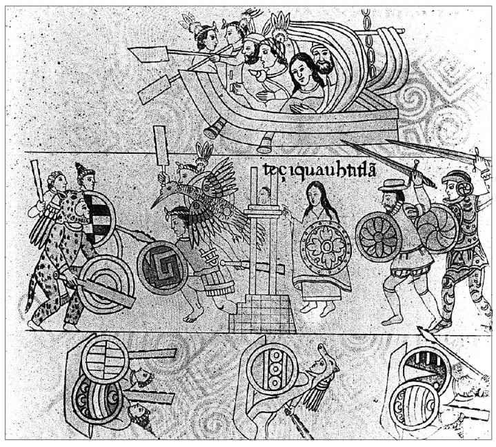
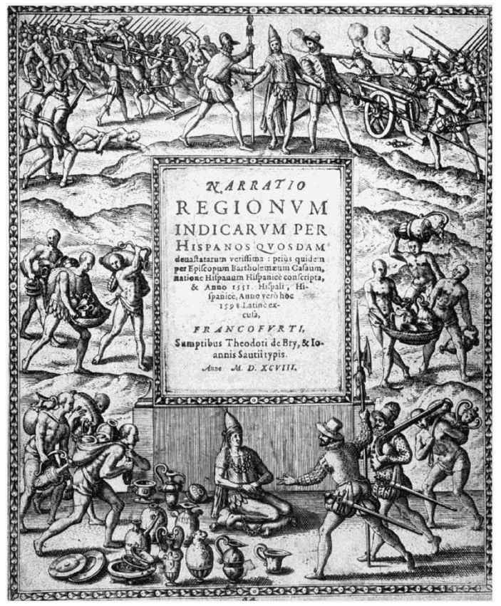

1519年是麦哲伦离开塞维利亚、开始著名的环球航行的一年，也是埃尔南多·科尔特斯离开古巴、发动对阿兹特克帝国的同样著名的远征的一年。科尔特斯在远征中，迎来了所谓的征服者时期。从1500年至1520年这前20年，已是探险者时期；那时，许多航海者打着各种旗帜探查整个美洲的东西两侧，以寻找通路。在随后的30年中，数千名西班牙冒险家赢得了第一个庞大的欧洲海外帝国。
埃尔南多·科尔特斯就是这些运气颇好的战士——典型的伊比利亚征伐传统的产物——中的一个。他贵族家庭出身，曾是位学法律而未成功的学生。1504年，他到达伊斯帕尼奥拉岛，6年后，参加了对古巴的征服。在这场征服战中，他战功卓著，遂当选为派往尤卡坦的一支探险队的总指挥，其任务是调查传说中生活在内地的文明城市的居民。1519年3月，科尔特斯在今天的韦拉克鲁斯附近的大陆海岸登陆。他只有600名部下、几门小炮、13支滑膛枪和16匹马。然而，正是凭借这支微不足道的力量，他将赢得巨大的财富，并成为一个异乎寻常、高度先进的帝国的主人。
科尔特斯上岸后先毁掉所有的船只，以向部下表明，如果他们失败，已无返回古巴的希望。接着，经过几次战斗之后，他与仇视阿兹特克霸主的各部落达成协议。假如没有这些部落提供的食物、搬运夫和战斗人员，科尔特斯原不可能赢得他所赢得的那些胜利。科尔特斯通过利用阿兹特克人的军事首领蒙提祖马的迷信，没有遇到抵抗就进入首都特诺奇蒂特兰城。他虽然受到蒙提祖马的礼遇，却奸诈地将蒙提祖马囚禁起来，扣作人质。但是，印第安人在人数上占有巨大优势，他们的祭司鼓动他们起来反抗。西班牙人毁坏当地神庙的政策激起了印第安人的一次起义，起义期间，蒙提祖马被杀。科尔特斯在黑夜里夺路逃出都城，出逃时，失去了三分之一部下和大半辎重。他之所以能从这一失败中恢复过来，是因为他的印第安盟友仍保持忠诚，且他从古巴得到增援。数月后，他回来了，以一支由800名西班牙士兵和至少 2.5万名印第安人组成的部队围攻都城。战斗十分激烈，并拖延了四个月。最后，1521年8月，残余的守城者交出了他们的城市，该城几乎已完全化为瓦砾。如今，墨西哥城就坐落在它的位置上，原先的阿兹特克人的首都几乎未留下一处遗迹。
更为鲁莽的冒险是一支有180人、27匹马和2门火炮的西班牙远征队对印加帝国的征服。远征队的总指挥是弗朗西斯科·皮萨罗。他是一个西班牙军官的私生子，目不识丁，当过流浪汉。他在经过最初的几次探险、获悉印加帝国的大体位置后，于1531年同他的4个兄弟一起，动身进行伟大的冒险。皮萨罗在翻越安第斯山脉时耽搁颇久，之后，于1532年11月15日到达已荒废了的卡哈马卡城。第二天，对这些陌生的“蓄络腮须的男子”感到好奇的印加统治者阿塔瓦尔帕正式访问了皮萨罗。皮萨罗仿效科尔特斯，将这位手无寸铁的、轻信的皇帝监禁起来，并残杀了他的许多随从。皇帝为获得自由付出了一大笔赎金——占地长22英尺、宽17英尺、高达7英尺的一堆金银物品。皮萨罗攫取这笔财物后，却又背信弃义地处死了阿塔瓦尔帕。于是，印加帝国处于无首领的境地，而印加居民早已习惯于家长式管辖，所以，他们进行不了什么抵抗。数星期后，皮萨罗开进首都库斯科，将它洗劫一空。1535年，皮萨罗动身去沿海地区，在那里兴建利马城；利马至今仍是秘鲁的首都。

图152 这幅作品描绘了16世纪中叶，西班牙利用美洲土著之间的战争渔翁得利，征服了墨西哥。
科尔特斯和皮萨罗的成功鼓舞着其他征服者进入南、北美洲大陆的广大地区，寻找更多的战利品。他们没有找到可与阿兹特克人和印加人的金银财宝相媲美的东西，但是，他们的确掌握了整个南美洲和很大一部分北美洲的主要地形。到16世纪中叶，他们已从秘鲁沿着亚马孙河抵达其河口。至这一世纪末，他们已经熟悉了从加利福尼亚湾南到火地岛、北至西印度群岛的整个南美洲的海岸线。同样，在北美洲，弗朗西斯科·科罗纳多为了寻找传说中的锡沃拉的七座黄金城，跋涉数千英里，发现了大峡谷和科罗拉多河。曾在征服秘鲁过程中崭露头角的埃尔南多·德索托广泛探察了后来成为美国的东南地区。他于1539年在佛罗里达登陆，向北前进到南卡罗来纳和北卡罗来纳，再往西行进至密西西比河，然后，从密西西比河与阿肯色河的汇合处沿密西西比河抵达其河口。这些人和其他许多同他们一样的人为西班牙人开辟了美洲大陆，其方式与后来的拉萨尔、刘易斯和克拉克为操法语和英语的诸民族开辟美洲大陆的方式完全一样。
到1550年，征服者们已经完成了他们的工作。西班牙人继续发展其海外属地的道路已畅通无阻。由于美洲大陆的土著居民不像亚、非两洲的土著居民那样密集或那么高度地组织起来，伊比利亚人有可能大批地在美洲拓居并强行推广自己的文化。因此，他们建立起欧洲的第一个真正的殖民地帝国——迥异于非洲和亚洲的纯商业帝国。
这些恃强凌弱的征服者作为帝国的缔造者是颇为能干的，但作为帝国的行政官员则平庸无能。他们不能过安定的生活；他们陷于内讧中，在长期的争斗和自相残杀的战争中使自己的士兵大批死亡。于是，西班牙王室用强行树立王权和王室公正原则的官僚取代了征服者。
居于这一帝国行政结构顶端的是西印度事务院，它设置在西班牙，受到君主的严密监督。它负责一切重要的任命，并对殖民地事务行使一般管辖权。美洲的最高权力委托给坐镇在墨西哥城和利马的两名总督。墨西哥城的总督领导新西班牙总督辖区，它包括北美洲所有的西属殖民地以及西印度群岛、委内瑞拉和菲律宾群岛。利马的总督负责秘鲁总督辖区，它包括南美洲剩下的西属殖民地。这两大总督辖区再分成较小的单位，由检审法院即地方议会统辖。检审法院配备的工作人员是专业律师，他们通常没有过多的家族自豪感或军事野心，因而成为理想的王室仆人。16世纪时，这种检审法院在美洲有10个。

图153 巴托洛梅·德拉斯·卡萨斯是一位西班牙传教士，他站在美洲土著一边反对西班牙殖民者的暴行。他的作品描绘了西印度群岛上美洲土著所遭受的不人道的残酷虐待。
西班牙人在美洲行政管理的一个基本问题是如何对待印第安人。君主准许有功征服者，即所谓的“保护者”或大授地主，向指定的印第安村庄提取规定的贡物，还有权征集强迫的劳动。作为回报，大授地主必须服兵役并支付教区牧师的薪水。征集强迫劳动的规定显然打开了虐待土著的大门，因而，在16世纪中叶这一规定得到修改。迫使土著劳动的做法仍能实行，但这种强制是来自政府的官员而非民间的大授地主，而且，须按官方工资标准向如此征求来的劳动者支付报酬。毋庸置言，这些保护措施并不总能得到执行。诸殖民地距马德里太远了，它们彼此之间也过于隔绝。然而，事实依旧是，西班牙人严肃、认真地讨论了一个无先例可循的剥削问题。
对西班牙殖民地帝国的经济来说，最重要的事实是，有了土著劳动力，大量的金银便可从墨西哥和玻利维亚的矿山源源不断地流入。法律规定所有贵金属运至官署加盖戳记，并按其价值五分之一的比率纳税，即缴纳“五一税”。从1503年至1660年，西班牙从美洲得到了总计1.86万吨登记白银和200吨登记黄金。未经登记、私自运入西班牙的金银据多方估计占总数的10%至50%。
除了开矿外，拉丁美洲的主要产业是大庄园农业和牲畜业，以及位于热带沿海地区的种植园的单一经营。大庄园雇用印第安劳力生产粮食，以供自己消费和出售给附近的城市及矿区。种植园则完全不同，主要使用从非洲进口的奴隶，而且仅仅生产一种供应欧洲市场的作物。最早的种植园是在大西洋诸群岛——亚速尔群岛、马德拉群岛、佛得角群岛和加那利群岛——种植甘蔗的过程中逐渐形成的。以后，这种经营方式又在巴西和西印度群岛的甘蔗种植园以及稍后美洲的烟草、棉花和咖啡种植园中得到进一步发展。大庄园和种植园生产的动植物产品的价值稳步增长，以至于到17世纪早期，甚至超过了富于传奇色彩的金银出口的价值。